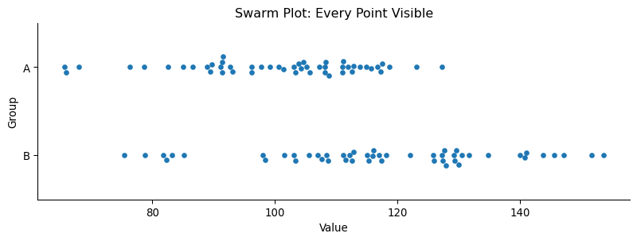
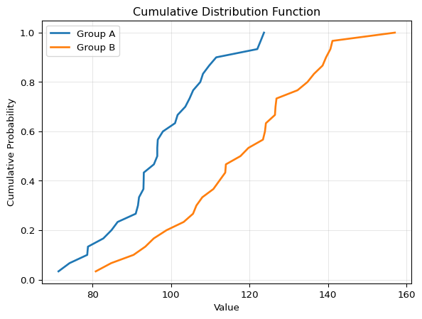

Imagine you’re reading a research paper that claims “Treatment A is significantly better than Treatment B.” The paper shows a bar chart with two bars and error bars. The difference looks impressive. But here’s the question: what does the actual data look like? Are there 5 data points per group? 500? Are they normally distributed, or are there outliers? Are most points clustered together, or spread out?
Without seeing the raw data, you’re flying blind. And unfortunately, many scientific papers and reports make this same mistake: they summarize data without showing it.
One thing I want you to keep in mind:
Show all the data points, whenever possible.
This is crucial for understanding the data and for communicating the message of the data.
1 Why Showing All Data Matters
Statisticians have been campaigning against bar charts with error bars—called “dynamite plots”—for years. Yet a systematic review found that 85.6% of papers in top physiology journals still use them. They appear everywhere: Nature, Science, Cell.
Why is this a problem? A dynamite plot shows you exactly four numbers (two means and two standard errors), regardless of sample size. But worse, completely different datasets produce identical bar charts. A dataset with outliers, a uniform distribution, or a bimodal distribution can all generate the same plot.
Rafael Irizarry showed an actual data behind a blood pressure comparison. The paper shows a bar chart with two bars and error bars. The difference looks significant. But the raw data revealed an extreme outlier (possibly a data entry error) and substantial overlap between groups. Remove that single outlier, and the result was no longer significant.
As Irizarry put it in his open letter to journal editors: dynamite plots conceal the data rather than showing it. The solution? Show the actual data points whenever possible, and use distributions (boxplots, histograms, density plots) when you can’t.
2 How to Show All Data Points
The most straightforward approach is to plot every single data point. A swarm plot (also called a beeswarm plot) does exactly this: it displays each observation as a point, with points arranged to avoid overlap.
Code
import seaborn as snsimport matplotlib.pyplot as pltimport numpy as np# Generate sample datafig, ax = plt.subplots(figsize=(10, 3))group_a = np.random.normal(100, 15, 50)group_b = np.random.normal(120, 20, 50)data = {'Value': np.concatenate([group_a, group_b]),'Group': ['A']*50+ ['B']*50}# Create swarm plotsns.swarmplot(data=data, y='Group', x='Value', ax = ax)plt.title('Swarm Plot: Every Point Visible')sns.despine()

Swarm Plot
Swarm plots are perfect for small to moderate datasets (roughly up to 100-200 points per group). There, you can see the actual sample size, the distribution shape, individual outliers, and the spread of the data.
When you have too many points for a swarm plot, a strip plot with jittering can help. Instead of carefully arranging points to avoid overlap, we add random noise (jitter) to the x-position of each point.
Code
# Strip plot with jitteringfig, ax = plt.subplots(figsize=(10, 3))sns.stripplot(data=data, y='Group', x='Value', alpha=0.6, jitter=0.2, ax = ax)plt.title('Strip Plot with Jittering')sns.despine()
Strip Plot with Jittering
The key parameters: - alpha: Controls transparency (0 = invisible, 1 = opaque). Values around 0.3-0.7 work well. - jitter: Amount of random horizontal displacement. Too much jitter and groups overlap; too little and points stack vertically.
For even larger datasets, consider a barcode plot. This shows each data point as a small vertical tick mark along an axis. It’s minimalist but effective for showing the distribution of many points.
Code
# Barcode plot using rug plotimport pandas as pd# Convert data to DataFrame if not alreadydata_df = pd.DataFrame(data)fig, ax = plt.subplots(figsize=(10, 2))for i, group inenumerate(['A', 'B']): values = data_df.loc[data_df['Group'] == group, 'Value'] ax.plot(values, [i]*len(values), '|', markersize=10, alpha=0.7)ax.set_yticks([0, 1])ax.set_yticklabels(['A', 'B'])ax.set_ylim(-0.5, 1.5)ax.set_xlabel('Value')ax.set_title('Barcode Plot')sns.despine()
Rug Plot
Barcode plots work well when you have thousands of points and want to show density patterns without losing the “raw data” feel.
3 When can’t show all data points?
When your dataset is large enough that individual points become impractical to show, you need to summarize the distribution. The most common approach is the histogram.
A histogram divides your data range into bins and counts how many observations fall into each bin. It’s a powerful tool for understanding the shape of your distribution.
The number of bins dramatically affects how your histogram looks. If you have too few bins, you lose detail and might miss important features like bimodality. If you have too many bins, the histogram becomes noisy and hard to interpret.
A good starting point is the Sturges’ rule: number of bins H \log_2(n) + 1, where n is the sample size. But always experiment! Try different bin numbers and see what reveals the most about your data’s structure.
Histograms have a problem: they’re sensitive to bin width and bin placement. Move your bins slightly, and the histogram can look quite different.
Kernel Density Estimation (KDE) provides a smooth alternative. Instead of binning, KDE places a small “kernel” (usually a Gaussian curve) at each data point and sums them up. The result is a smooth density curve.
Code
sns.kdeplot(data=group_a, label='A', fill=True, alpha=0.5)sns.kdeplot(data=group_b, label='B', fill=True, alpha=0.5)plt.xlabel('Value')plt.ylabel('Density')plt.legend()plt.title('Kernel Density Estimate')plt.show()

Kernel Density Estimate
KDE plots are elegant and reveal the shape of your distribution without the arbitrary choices of histograms. However, they can be misleading at the edges of your data and may suggest data exists where it doesn’t.
4 For Heavy-Tailed Data
Some data are extremely heterogeneous—think income distributions, city populations, or earthquake magnitudes. These distributions often have heavy tails: most values are small, but a few are enormous.
For this kind of data, histograms and KDE plots can be misleading because they compress the tail into a tiny region of the plot.
The cumulative distribution function (CDF) shows the proportion of data points less than or equal to each value. Instead of asking “how many points are in this bin?”, the CDF asks “what fraction of points are below this value?”
The CDF is a density estimation method that requires no parameter choices. Unlike histograms (which require bin size) or KDE (which requires bandwidth), the CDF is completely determined by your data. There are no arbitrary decisions that change how your data looks—making it one of the most honest ways to visualize a distribution.
Easy to read percentiles: The median is where CDF = 0.5
Great for comparisons: Differences between groups are easy to spot
For heavy-tailed distributions, the complementary cumulative distribution function (CCDF) is even more useful. The CCDF shows the proportion of data points greater than each value: CCDF(x) = 1 - CDF(x).
Unlike the CDF, the CCDF can show, when combined with the log-log scale, the tail of heavy-tailed distributions.
CDF vs CCDF. The CCDF reveals the tail behavior that’s invisible in traditional histograms.
5 The Bigger Picture
The methods you choose to visualize your data aren’t just aesthetic choices—they’re scientific choices. Different visualizations reveal different aspects of your data, and some can hide important patterns.
By starting with the raw data and building up to summaries, you ensure that you understand what you’re working with. And by showing your data (not just summarizing it), you allow others to draw their own conclusions.
Source Code
---title: "1D Data Visualization"jupyter: advnetsciexecute: enabled: true---Imagine you're reading a research paper that claims "Treatment A is significantly better than Treatment B." The paper shows a bar chart with two bars and error bars. The difference looks impressive. But here's the question: what does the actual data look like? Are there 5 data points per group? 500? Are they normally distributed, or are there outliers? Are most points clustered together, or spread out?Without seeing the raw data, you're flying blind. And unfortunately, many scientific papers and reports make this same mistake: they summarize data without showing it.One thing I want you to keep in mind:**Show all the data points, whenever possible.**This is crucial for understanding the data and for communicating the message of the data.# Why Showing All Data MattersStatisticians have been campaigning against bar charts with error bars—called "dynamite plots"—for years. Yet a systematic review found that **85.6% of papers in top physiology journals still use them**. They appear everywhere: Nature, Science, Cell.Why is this a problem? A dynamite plot shows you exactly four numbers (two means and two standard errors), regardless of sample size. But worse, **completely different datasets produce identical bar charts**. A dataset with outliers, a uniform distribution, or a bimodal distribution can all generate the same plot.Rafael Irizarry showed an actual data behind a blood pressure comparison. The paper shows a bar chart with two bars and error bars. The difference looks significant.But the raw data revealed an extreme outlier (possibly a data entry error) and substantial overlap between groups. Remove that single outlier, and the result was no longer significant.As Irizarry put it in [his open letter to journal editors](https://simplystatistics.org/posts/2019-02-21-dynamite-plots-must-die/): dynamite plots conceal the data rather than showing it. The solution? Show the actual data points whenever possible, and use distributions (boxplots, histograms, density plots) when you can't.# How to Show All Data PointsThe most straightforward approach is to plot every single data point. A **swarm plot** (also called a beeswarm plot) does exactly this: it displays each observation as a point, with points arranged to avoid overlap.```{python}#| fig-cap: "Swarm Plot"#| fig-width: 10#| fig-height: 3#| code-fold: trueimport seaborn as snsimport matplotlib.pyplot as pltimport numpy as np# Generate sample datafig, ax = plt.subplots(figsize=(10, 3))group_a = np.random.normal(100, 15, 50)group_b = np.random.normal(120, 20, 50)data = {'Value': np.concatenate([group_a, group_b]),'Group': ['A']*50+ ['B']*50}# Create swarm plotsns.swarmplot(data=data, y='Group', x='Value', ax = ax)plt.title('Swarm Plot: Every Point Visible')sns.despine()```Swarm plots are perfect for small to moderate datasets (roughly up to 100-200 points per group). There, you can see the actual sample size, the distribution shape, individual outliers, and the spread of the data.When you have too many points for a swarm plot, a **strip plot with jittering** can help. Instead of carefully arranging points to avoid overlap, we add random noise (jitter) to the x-position of each point.```{python}#| fig-cap: "Strip Plot with Jittering"#| fig-width: 10#| fig-height: 3#| code-fold: true# Strip plot with jitteringfig, ax = plt.subplots(figsize=(10, 3))sns.stripplot(data=data, y='Group', x='Value', alpha=0.6, jitter=0.2, ax = ax)plt.title('Strip Plot with Jittering')sns.despine()```The key parameters:- `alpha`: Controls transparency (0 = invisible, 1 = opaque). Values around 0.3-0.7 work well.- `jitter`: Amount of random horizontal displacement. Too much jitter and groups overlap; too little and points stack vertically.::: {.column-margin}A figure taken from the paper [Neural embeddings of scholarly periodicals reveal complex disciplinary organizations](https://www.science.org/doi/10.1126/sciadv.abb9004) by showing the distribution of publications in terms of various scientific contrasts.:::For even larger datasets, consider a **barcode plot**. This shows each data point as a small vertical tick mark along an axis. It's minimalist but effective for showing the distribution of many points.```{python}#| fig-cap: "Rug Plot"#| fig-width: 10#| fig-height: 2#| code-fold: true# Barcode plot using rug plotimport pandas as pd# Convert data to DataFrame if not alreadydata_df = pd.DataFrame(data)fig, ax = plt.subplots(figsize=(10, 2))for i, group inenumerate(['A', 'B']): values = data_df.loc[data_df['Group'] == group, 'Value'] ax.plot(values, [i]*len(values), '|', markersize=10, alpha=0.7)ax.set_yticks([0, 1])ax.set_yticklabels(['A', 'B'])ax.set_ylim(-0.5, 1.5)ax.set_xlabel('Value')ax.set_title('Barcode Plot')sns.despine()```Barcode plots work well when you have thousands of points and want to show density patterns without losing the "raw data" feel.# When can't show all data points?When your dataset is large enough that individual points become impractical to show, you need to summarize the distribution. The most common approach is the **histogram**.A histogram divides your data range into bins and counts how many observations fall into each bin. It's a powerful tool for understanding the shape of your distribution.```{python}#| fig-cap: "Histogram"#| fig-width: 10#| fig-height: 3#| code-fold: true# Histogramplt.hist(group_a, bins=15, alpha=0.5, label='Group A', edgecolor='black')plt.hist(group_b, bins=15, alpha=0.5, label='Group B', edgecolor='black')plt.xlabel('Value')plt.ylabel('Count')plt.legend()plt.title('Histogram: Distribution Comparison')plt.show()```The number of bins dramatically affects how your histogram looks. If you have too few bins, you lose detail and might miss important features like bimodality. If you have too many bins, the histogram becomes noisy and hard to interpret.A good starting point is the **Sturges' rule**: number of bins H $\log_2(n) + 1$, where $n$ is the sample size. But always experiment! Try different bin numbers and see what reveals the most about your data's structure.Histograms have a problem: they're sensitive to bin width and bin placement. Move your bins slightly, and the histogram can look quite different.**Kernel Density Estimation (KDE)** provides a smooth alternative. Instead of binning, KDE places a small "kernel" (usually a Gaussian curve) at each data point and sums them up. The result is a smooth density curve.```{python}#| fig-cap: "Kernel Density Estimate"#| fig-width: 10#| fig-height: 3#| code-fold: truesns.kdeplot(data=group_a, label='A', fill=True, alpha=0.5)sns.kdeplot(data=group_b, label='B', fill=True, alpha=0.5)plt.xlabel('Value')plt.ylabel('Density')plt.legend()plt.title('Kernel Density Estimate')plt.show()```KDE plots are elegant and reveal the shape of your distribution without the arbitrary choices of histograms. However, they can be misleading at the edges of your data and may suggest data exists where it doesn't.# For Heavy-Tailed DataSome data are extremely heterogeneous---think income distributions, city populations, or earthquake magnitudes. These distributions often have heavy tails: most values are small, but a few are enormous.For this kind of data, histograms and KDE plots can be misleading because they compress the tail into a tiny region of the plot.The **cumulative distribution function (CDF)** shows the proportion of data points less than or equal to each value. Instead of asking "how many points are in this bin?", the CDF asks "what fraction of points are below this value?"**The CDF is a density estimation method that requires no parameter choices.** Unlike histograms (which require bin size) or KDE (which requires bandwidth), the CDF is completely determined by your data. There are no arbitrary decisions that change how your data looks—making it one of the most honest ways to visualize a distribution.```{python}#| fig-cap: "Cumulative Distribution Function"#| fig-width: 10#| fig-height: 3#| code-fold: true# CDFsorted_a = np.sort(group_a)cdf_a = np.arange(1, len(sorted_a) +1) /len(sorted_a)sorted_b = np.sort(group_b)cdf_b = np.arange(1, len(sorted_b) +1) /len(sorted_b)plt.plot(sorted_a, cdf_a, label='Group A', linewidth=2)plt.plot(sorted_b, cdf_b, label='Group B', linewidth=2)plt.xlabel('Value')plt.ylabel('Cumulative Probability')plt.legend()plt.title('Cumulative Distribution Function')plt.grid(True, alpha=0.3)plt.show()```The CDF has several advantages:- No binning decisions: Every data point is shown- Easy to read percentiles: The median is where CDF = 0.5- Great for comparisons: Differences between groups are easy to spotFor heavy-*tailed* distributions, the **complementary cumulative distribution function (CCDF)** is even more useful. The CCDF shows the proportion of data points *greater than* each value: CCDF(x) = 1 - CDF(x).Unlike the CDF, the CCDF can show, when combined with the log-log scale, the tail of heavy-tailed distributions.```{python}#| fig-cap: "CDF vs CCDF. The CCDF reveals the tail behavior that's invisible in traditional histograms."#| fig-width: 10#| fig-height: 5#| code-fold: true# CCDF on log-log scale# Generate heavy-tailed data# Generate heavy-tailed datasns.set(font_scale=2.0)sns.set_style("white")heavy_tailed = np.random.pareto(2, 1000) +1sorted_data = np.sort(heavy_tailed)cdf = np.arange(1, len(sorted_data) +1) /len(sorted_data)ccdf =1- cdffig, ax = plt.subplots(1, 2, figsize=(14, 7))# CDF plot (linear scale) using seaborn (lineplot)sns.lineplot(x=sorted_data, y=cdf, ax=ax[0], color=sns.color_palette()[0], linewidth=2)ax[0].set_xlabel('Value')ax[0].set_ylabel('P(X ≤ x)')ax[0].set_title('Cumulative Distribution Function (CDF)')ax[0].grid(True, alpha=0.3)# CCDF plot (log-log scale) using seaborn (scatterplot)sns.scatterplot(x=sorted_data, y=ccdf, ax=ax[1], color=sns.color_palette()[1], alpha=0.5, s=9, marker='o')ax[1].set_xscale('log')ax[1].set_yscale('log')ax[1].set_xlabel('Value')ax[1].set_ylabel('P(X > x)')ax[1].set_title('Complementary Cumulative Distribution (CCDF)')ax[1].grid(True, alpha=0.3)plt.tight_layout()plt.show()```# The Bigger PictureThe methods you choose to visualize your data aren't just aesthetic choices---they're scientific choices. Different visualizations reveal different aspects of your data, and some can hide important patterns.By starting with the raw data and building up to summaries, you ensure that you understand what you're working with. And by showing your data (not just summarizing it), you allow others to draw their own conclusions.